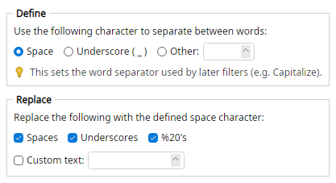

Defines which character is used as the word separator for filters that follow it, and optionally replaces common stand-ins with that character.
Later filters such as Shrink Spaces, Remove Spaces, Separate Capitalized Text, strip-space filters, and Capitalize use this separator. Until this filter runs, the default is ordinary space.
Gone%20With%20The%20Wind >>> Gone_With_The_Wind
a_b c%20d >>> a b c d
a++b >>> a-b
Put Space Character before any filter that should use a non-space word boundary.